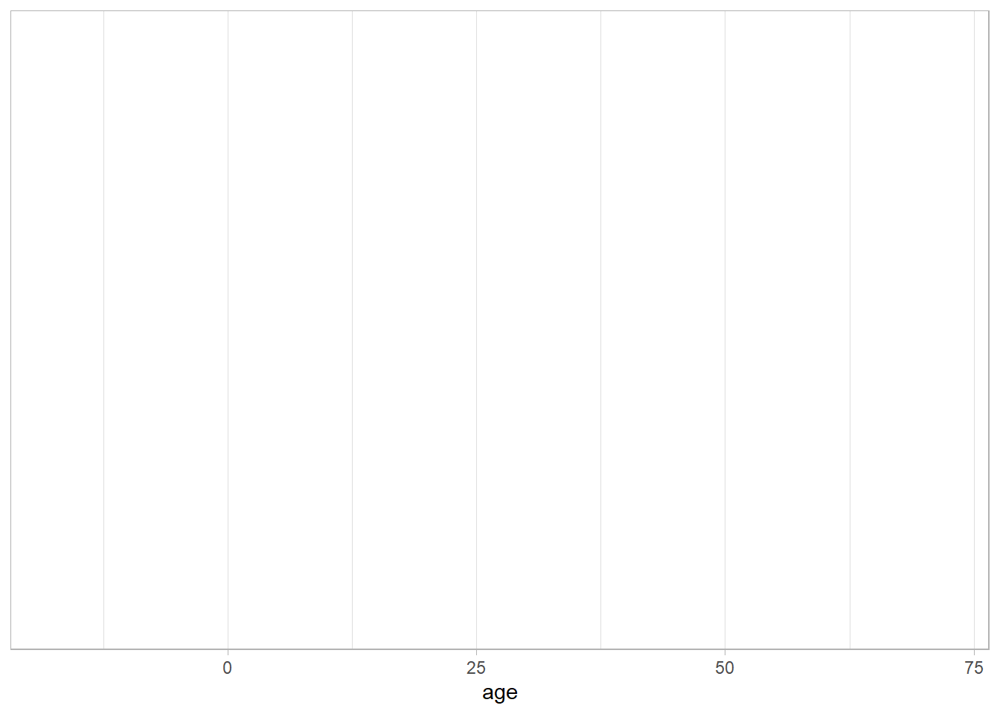
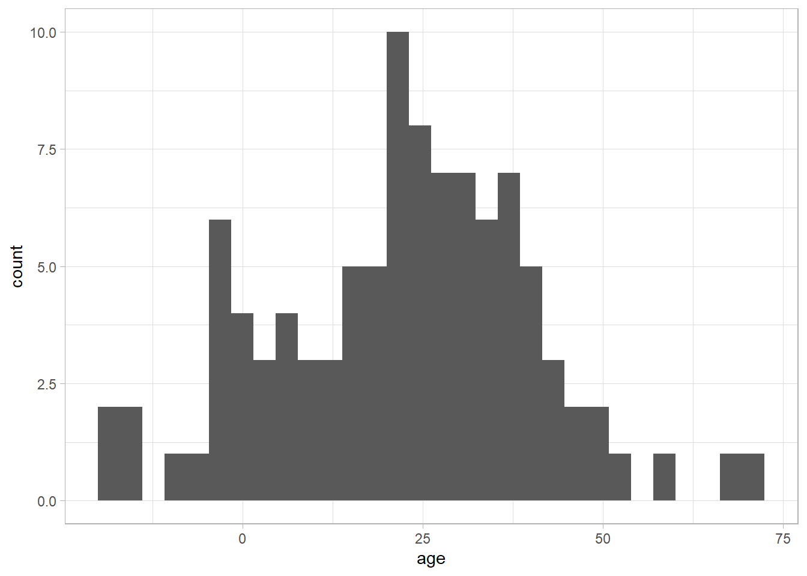
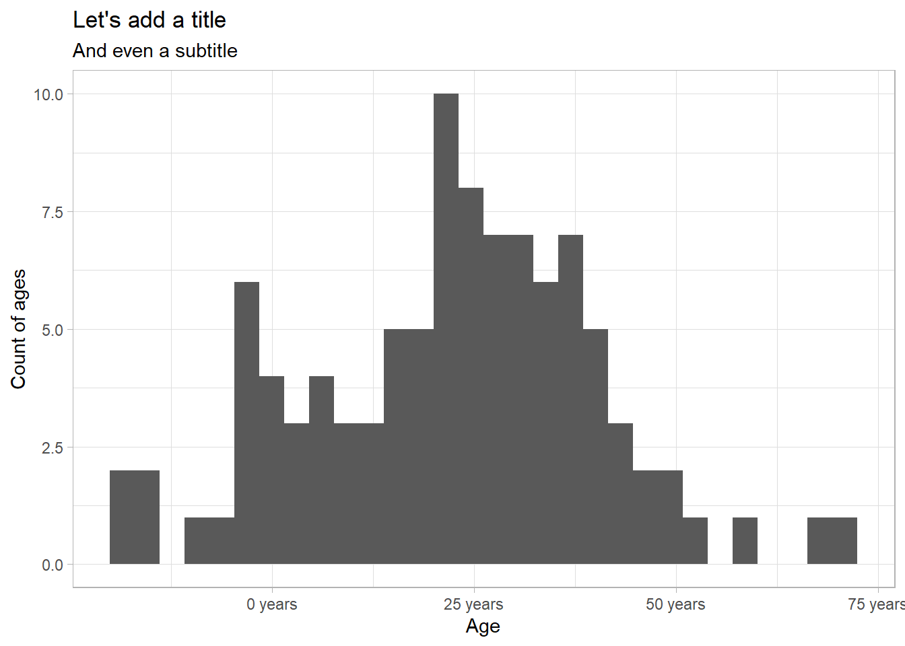

We are writing at the moment in a file called a quarto markdown file (.qmd). It is a lot like a dofile in Stata, but it can take normal text in addition to code comments, and when you produce output from your code, it can be shown next to the code that produced it.
The advantage of this workflow is that it is highly reproducible, and easy for us to document what we’re up to.
For example, say we have a list of people’s ages.
library(tidyverse) # for plotting and data analysislibrary(gt) # for tablestheme_set(theme_light()) # less ugly plot coloursages <-tibble(age =rnorm(n =100, mean = params$mean_age, sd =20))ages
# A tibble: 100 × 1
age
<dbl>
1 21.7
2 26.8
3 19.6
4 -3.09
5 -6.69
6 36.4
7 -1.79
8 33.8
9 31.0
10 38.6
# … with 90 more rows
We can make a quick histogram of the ages using ggplot and a summary table using gt.
ggplot( ages,aes(age)) +geom_histogram(bins =10) +labs(x ="Age",y="Number of observations")
If we are told we had the wrong data, and in fact that the mean of the ages is 25 rather than 50, we can reproduce the same report by changing our data (in this case the parameter called mean_age to 50), and we don’t have copy and paste the results into our word document - they just automatically populate this document.
Figures in ggplot
The best thing about R is the nice figures.
Let’s build one up.
We start with our data object, in this case, ages.
ages
# A tibble: 100 × 1
age
<dbl>
1 21.7
2 26.8
3 19.6
4 -3.09
5 -6.69
6 36.4
7 -1.79
8 33.8
9 31.0
10 38.6
# … with 90 more rows
ggplot(data = ages) # the object we want to plot
Next we tell ggplot what variable we want to plot.
ggplot(data = ages,mapping =aes(age) # the variable we want to plot)

Then we tell it what kind of plot we want. Great!
ggplot(data = ages,mapping =aes(age)) +geom_histogram() # the geometry we want to use

Finally we can tidy it up with some labels and scales.
ggplot(data = ages,mapping =aes(age)) +geom_histogram() +scale_x_continuous(labels = scales::number_format(suffix =" years")) +# we can add this if we wantlabs( # nice labels!title ="Let's add a title",subtitle ="And even a subtitle",x ="Age",y ="Count of ages" )

If we want to change the the type of plot, it’s just one line, changing geom_histogram() to geom_density.
ggplot(data = ages,mapping =aes(age)) +geom_density() +scale_x_continuous(labels = scales::number_format(suffix =" years")) +# we can add this if we wantlabs( # nice labels!title ="Let's add a title",subtitle ="And even a subtitle",x ="Age",y ="Count of ages" )